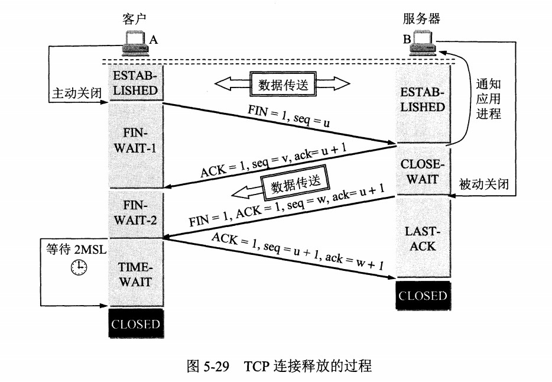

TCP报文格式

*源端口号：表示发送端端口号，字段长16位。
目的端口：表示接收端端口号，字段长度16位。
序号：字段长32位。序列号是指发送数据的位置。每发送一次数据，就累加一次该数据字节数的大小。序列号不会从0或1开始，而是在建立连接时由计算机生成的随机数作为其初始值通。然后再将每转发过去的字节数累加到初始值上表示数据的位置。例如序号为401，表示第一个字节的编号为 401，如果携带的数据长度为 100 字节，那么下一个报文段的序号应为 501。此外，在建立连接和断开连接的时发送的SYN包和FIN包虽然并不携带数据，但是也会作为一个字节增加对应的序列号。
确认号：确认应答号字段长度为32位。是指下一次应该收到的数据的序列号。实际上，它是指已收到确认应答号减一为止的数据。发送端接收到这个确认应答号以后可以认为在这个序列号以前的数据都已经被正常接收。
数据偏移：该字段表示TCP所传输的数据部分应该从TCP包的哪个位开始，可以把它看做TCP首部的长度。该字段长为4字节。
保留：该字段主要是为了以后扩展时使用，其长度为4位，一般设置为0，但即使收到的包在该字段不为0，此包也不会被丢弃。
控制位：字段长为8位，每一个从左到至右分别为URG ACK PSH RST SYN FIN。这些控制标志也叫作控制位。当它们对应位上的值为1时，具体含义如下：
URG：紧急指针标志，为1时表示紧急指针有效，为0则忽略紧急指针。
ACK：确认序号标志，为1时表示确认号有效，为0表示报文中不含确认信息，忽略确认号字段。
PSH：push标志，为1表示是带有push标志的数据，指示接收方在接收到该报文段以后，应尽快将这个报文段交给应用程序，而不是在缓冲区排队。
RST：重置连接标志，用于重置由于主机崩溃或其他原因而出现错误的连接。或者用于拒绝非法的报文段和拒绝连接请求。
SYN：同步序号，用于建立连接过程，在连接请求中，SYN=1和ACK=0表示该数据段没有使用捎带的确认域，而连接应答捎带一个确认，即SYN=1和ACK=1。
FIN：finish标志，用于释放连接，为1时表示发送方已经没有数据发送了，即关闭本方数据流。
窗口：滑动窗口大小，用来告知发送端接受端的缓存大小，以此控制发送端发送数据的速率，从而达到流量控制。窗口大小时一个16bit字段，因而窗口大小最大为65535。
校验和：奇偶校验，此校验和是对整个的 TCP 报文段，包括 TCP 头部和 TCP 数据，以 16 位字进行计算所得。由发送端计算和存储，并由接收端进行验证。
紧急指针：只有当 URG 标志置 1 时紧急指针才有效。紧急指针是一个正的偏移量，和顺序号字段中的值相加表示紧急数据最后一个字节的序号。 TCP 的紧急方式是发送端向另一端发送紧急数据的一种方式。
选项和填充：最常见的可选字段是最长报文大小，又称为MSS（Maximum Segment Size），每个连接方通常都在通信的第一个报文段（为建立连接而设置SYN标志为1的那个段）中指明这个选项，它表示本端所能接受的最大报文段的长度。选项长度不一定是32位的整数倍，所以要加填充位，即在这个字段中加入额外的零，以保证TCP头是32的整数倍。
数据部分： TCP 报文段中的数据部分是可选的。在一个连接建立和一个连接终止时，双方交换的报文段仅有 TCP*首部。如果一方没有数据要发送，也使用没有任何数据的首部来确认收到的数据。在处理超时的许多情况中，也会发送不带任何数据的报文段。
三次握手

A 为客户端，B 为服务器端。
三次握手过程
- B(服务器端) 处于监听状态，等待客户的连接请求。
- A 主动向 B 发送连接请求报文，SYN=1，ACK=0，选择一个随机选择的seq（序号） x。
- B 收到来自A的请求报文，如果同意建立连接，则向 A 发送连接确认报文，SYN=1，ACK=1，确认号ack为 x+1，同时也选择一个序号 y。
- A 收到 B 的连接确认报文后，还要向 B 发出确认，ACK=1，确认号为 y+1，序号为 x+1。
- B 收到 A 的确认后，连接建立。
为什么需要三次握手
关键点：请求滞留
正常情况下，A发出连接请求，如果因为连接报文请求丢失而未收到确认，客户端等待一个超时重传时间之后，就会重新请求连接。于是A再重传一次连接请求，B后来收到了请求，并进行确认，建立了连接，数据传输完毕后，就释放链接。这是正常情况下，A共发送了两次连接请求报文段，其中第一个丢失，第二个到达了B。
考虑这样一种情况，A发送的请求报文连接段并没有丢失，而是在网络中滞留较长时间，以致延误到某个时间到达B，本来是一个早已失效的报文段，但是B收到了此失效连接请求报文段后，就误以为A又重新发送的连接请求报文段，并发送确认报文段给A，同意建立连接，如果没有三次握手，那么B发送确认后，连接就建立了。
这种情况下，由于A并没有主动建立这个连接，于是不理会B的确认，也不会给B发送数据，而B会一直等待A发送数据，如果没有第三次握手，会导致B的资源浪费。如果有第三次握手，服务器只有收到第三次握手的确认消息才会去建立连接，避免重复打开连接。
四次挥手
四次挥手过程
- A 发送连接释放报文，FIN=1，seq=u。
- B 收到之后发出确认,ACK=1,seq=v,ack=u+1。此时 TCP 属于半关闭状态，B 能向 A 发送数据但是 A 不能向 B 发送数据。（考点：在半关闭状态下服务器端报文丢失会重传吗？—>）
- 当 B 不再需要连接时，发送连接释放报文，FIN=1。
- A 收到后发出确认，进入 TIME-WAIT 状态，等待 2 MSL（最大报文存活时间）后释放连接。
- B 收到 A 的确认后释放连接。
为什么需要四次挥手
关键点：收到客户端的请求不会立即关闭SOCKET
在三次握手时，当服务端收到客户端的SYN连接请求后，可以直接回复SYN+ACK报文，同意进行连接。其中ACK报文是用来应答的，SYN报文是用来同步的。但是关闭连接时，当服务端收到FIN报文时，很可能并不会立即关闭SOCKET，所以只能先回复一个ACK报文，告诉客户端，”你发的FIN报文我收到了”。等到服务端将剩余的所有的报文都发送完了，才能发送FIN报文，因此不能一起发送。故需要四次挥手。
四次挥手释放连接时，等待2MSL的意义
MSL：Maximum Segment Lifetime，“最大报文存活时间”
如果最后客户端返回的 ACK 号丢失了，结果会如何呢？这时，服务器没有接收到 ACK 号，可能会重发一次 FIN。如果这时客户端的套接字已经删除了，会发生什么事呢？套接字被删除，那么套接字中保存的控制信息也就跟着消失了，套接字对应的端口号就会被释放出来。
这时，如果别的应用程序要创建套接字，新套接字碰巧又被分配了同一个端口号 ，而服务器重发的 FIN 正好到达，会怎么样呢？本来这个 FIN 是要发给刚刚删除的那个套接字的，但新套接字具有相同的端口号，于是这个 FIN 就会错误地跑到新套接字里面，新套接字就开始执行断开操作了。之所以不马上删除套接字，就是为了防止这样的误操作。